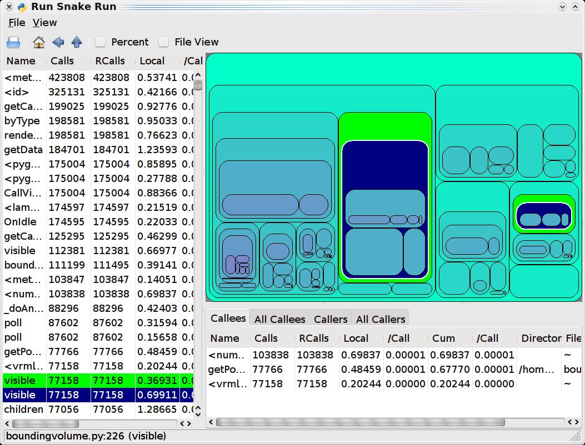

RunSnakeRun
 RunSnakeRun is a small GUI utility that allows
you to view (Python) cProfile or Profile profiler dumps in a sortable
GUI view. It allows you to explore the profiler information using
a "square map" visualization or sortable tables of data. It also (experimentally)
allows you to view the output of the Meliae "memory analysis" tool
using the same basic visualisations.
RunSnakeRun is a small GUI utility that allows
you to view (Python) cProfile or Profile profiler dumps in a sortable
GUI view. It allows you to explore the profiler information using
a "square map" visualization or sortable tables of data. It also (experimentally)
allows you to view the output of the Meliae "memory analysis" tool
using the same basic visualisations.
Features
RunSnakeRun is a simple program, it doesn't provide
all the bells-and-whistles of a program like KCacheGrind, it's intended
to allow for profiling your Python programs, and just your Python
programs. What it does provide, for profile viewing:
- sortable data-grid views for raw profile information
- identity: function name, file-name, directory name
- time-spent: cumulative, cumulative-per, local and local-per time
- overall data-grid view
- (all) callers-of-this-function, (all) callees-of-this-function views
- squaremap view of call tree
- size proportional to amount of time spent by the given parent in the given function
- squaremap view of packages/modules/functions
- size proportional to time spent in each package/module/function
- basic navigation (home, back, up)
For Meliae memory-dump viewing, it provides:
- sortable data-grid views
- squaremap of memory-usage
- basic navigation
Installation
You will need to have all of wxPython, SquareMap and RunSnakeRun
installed to use RunSnakeRun. You may also need the
"python-profiler" package for your platform, which provides the pstats
view. You will likely want to use your platform wxPython package
(i.e. a pre-built binary). For Debian/Ubuntu distributions the
prerequisite setup looks like this:
apt-get install python-profiler python-wxgtk2.8 python-setuptools
RunSnakeRun and SquareMap will install well in a VirtualEnv if you
would like to keep them isolated (normally you do not want to use the --no-site-packages flag if you are doing this). I recommend this approach rather than using easy_install directly on your Linux/OS-X host.
virtualenv runsnake
source runsnake/bin/activate
If you already have Python setuptools installed (a.k.a. easy_install), you should be able to install the Python packages with:
easy_install SquareMap RunSnakeRun
You will require a modern wxPython (e.g. 2.8) and
Python 2.x (e.g. 2.5 through 2.7) installation. The setup will create a script named
"runsnake" on Linux machines which launches the profile viewer.
On OS-X machines a wrapper script runsnake is created that runs the
runsnake32 executable with a flag to tell Python to use the 32-bit
implementation (for wxPython compatibility). On Win32 machines, a
Scripts\runsnake.exe executable is created. If you have added
your scripts directory to the PATH then this will be available from the
command-line.
Usage
If you are new to profiling you may wish to check out:
cProfile Viewing
To use cProfile to capture your application's profile data, either using the command-line, like so:
$ python -m cProfile -o <outputfilename> <script-name> <options>
Or in code, like so:
import cProfile
command = """reactor.run()"""
cProfile.runctx( command, globals(), locals(), filename="OpenGLContext.profile" )
To view the results of your run:
python runsnake.py OpenGLContext.profile
There will be a brief delay as the application is created and begins
the loading process, then you should see something like this:

Click on any column title to sort by that property within that list.
Select a record in the left-most list view to see a breakdown of
that record in the right-side list views. Choose the appropriate
view on the right via the tabs. You can resize the borders
between the lists and square-map views. You can select a
package/module/function hierarchic view via the menus. You can
also toggle use of percentage displays there.
Meliae Memory Analysis
Note: this feature is considered
experimental, the memory consumed loading even a tiny meliae dump is
enormous, so real-world programs will make RunSnakeRun quite slow and
require a very large amount of RAM (far more than the process being
viewed).
To install Meliae, you will need a working C extension compilation environment (Meliae uses a Cython extension):
easy_install meliae
Now instrument your application to be able to trigger a memory dump at the moment you would like to capture, like so:
from meliae import scanner
scanner.dump_all_objects( filename ) # you can pass a file-handle if you prefer
The memory dump will generally be quite large (e.g. 2MB to describe
an application with 200KB of user-controllable memory usage (i.e. not
the interpreter itself)) and for any real application will take an
extremely long time to load (multiple minutes for 16MB dumps).
$ runsnakemem <filename>
The Meliae loader in RunSnakeRun performs the following simplifications:
- only displays memory which is reachable from a module (there is
normally > 1MB of unreachable objects included in a meliae dump)
- treats modules as memory-cost barriers, so referencing a module does not cost the referrer anything
- treats all (reachable) references to an instance as sharing the cost of the instance equally
- treats loops as being a separate object which holds all objects
in the loop, breaking inter-loop references but retaining child
references, all references to the loop members become references to the
loop
- eliminates dictionary objects from modules (always) and from
types and classes when the dictionary is only referenced by the
class/type, the cost of the dictionary is folded into the cost of the
parent object (note: this means that function __globals__ references
are "0-cost" and do not create loops)
- compresses large numbers (>=10 currently) of "simple" objects
of the same type held by a single parent into a "<many>" object
with the type as the name
Even with those simplifications, however, the program is tracking
most ints, strings, tuples, lists, etc. separately, which uses a large
amount of RAM and slows down the GUI substantially.
Code Access and Contributions
RunSnakeRun
is reasonably stable. I don't tend to do much work on it, as it
tends to just work. My (personal) current wish list for the project follows:
- Speed up and reduce memory requirements for meliae loading
- Clean up the meliae loader (was grown organically from a quick hack and doesn't particularly invite further hacking)
If you have an idea, feel free
to check out the code and implement the new feature. I'm certainly willing
to entertain new features or bug-fix requests as well. The code
is available in bzr here:
bzr branch lp:~mcfletch/squaremap/trunk squaremap
cd squaremap
python setup.py develop
bzr branch lp:~mcfletch/runsnakerun/trunk runsnakerun
cd runsnakerun
python setup.py develop
You can contact me directly if you'd like to contribute. Or you can just set up a bzr branch on LaunchPad and request a merge.
Roadmap/Wish-list
This is just a listing of things that either I or others have requested as features:
- provide comparison views and "progress" views that compare across multiple profiles
- (re)support Hotshot profile dumps (removed because Hotshot itself was deprecated)
- support Robert Kern's line_profiler module (line and import timings)
- support IronPython profiles (with cleanup on load to remove "noise" functions)
- with a line-profiling module, allow per-line profile views
- support (C) calltree/cachegrind files (as used by kcachegrind)
- clean up the UI code (very hacky)
- configuration/storage of preferences such as column widths, rounded corners, padding, etc.
- utility functions for capturing data
Other Tools
RunSnakeRun is by no means a comprehensive
tool-set for profiling, you may want to have any or all of these other
tools available for your profiling needs:
- Gprof2Dot -- Converts various Profile formats into dot-format graphs
- Robert Kern's line_profiler -- Cython based Python profiler with line timings
- KCacheGrind -- KDE viewer for CacheGrind C-level profiler or converted Python profiles (via pyprof2calltree),
KCacheGrind is basically what RunSnakeRun started off trying to imitate
save that RunSnakeRun was intended to be Python specific and
cross-platform
- profilehooks -- specify which function to profile by using a decorator on a particular function
Releases/Downloads
- 2.0.3
-- Stores list control column widths in config file (contributed by
Gerald Dalley), minor bug-fixes, coldshot profiler support, wxPython
compatability, do not use separators on OSX
- 2.0.2a1 -- Stores window position and size in config file
- 2.0.1 -- Fix for OS-X loading (32-bit mode forced)
- 2.0.1b6 -- Fixes regression from introducing runsnakemem command
- 2.0.1b5
-- Fix regression for OS-X during work-around for Win32, add program
icon, provide a dedicated command alias for meliae loading (runsnakemem
dump.memory)
- 2.0.1b4 -- Win32 source-code-control bug work-around (disables source-code view on Win32)
- 2.0.1b3 -- Performance and correctness fixes for meliae loads (still slow, but not as horribly slow)
- 2.0.1b1 -- Experimental support for meliae loads
- 2.0.0b6 -- Fixes and enhancements by Marius Gedminas
(percent-in-tooltips, code restructuring, home-button fix), display
source-code for functions when selected, make SquareMap an explicit
dependency, more robust selection of "root" nodes (better first-view
selection)
- 2.0.0b5 -- Add names of loaded files to the window title,
use same colour for each node, make colours cycle across far wider
range of colours, bug-fixes
- 2.0.0b4 -- Win32 bug-fixes, drawing of labels on squaremap where there's enough space
- 2.0.0b1 -- packaging fixes, UI fixes
- 2.0.0a1 -- Eliminate support for (obsolete) Hotshot
profiles, add squaremap visualization and callee/caller views, lots of
UI work to make the application more usable, preliminary i18n work
(just gettext markup)
- 1.0.4 -- Add
preliminary support for standard cProfile/profile profile results, note
that we do not load cProfile results incrementally. Switch to
numpy support from Numeric. Use setuptools for distribution.
Provide source repository access.
- 1.0.3 -- Fix stupid bug
introduced by last fix
- 1.0.2 -- Magically grow
the stack-tracking structures if we pass recursion limits, this will be
slow, but it should allow for loading even extremely stack-exhausting
programs
- 1.0.1 -- Bug-fix,
increases stack-tracking size to 10x recursion limit, instead of ==
recursion limit, but as of yet, doesn't seem to fix the reported
stack-exhaustion
- 1.0.0 -- Initial release,
no fancy features, just the raw functionality